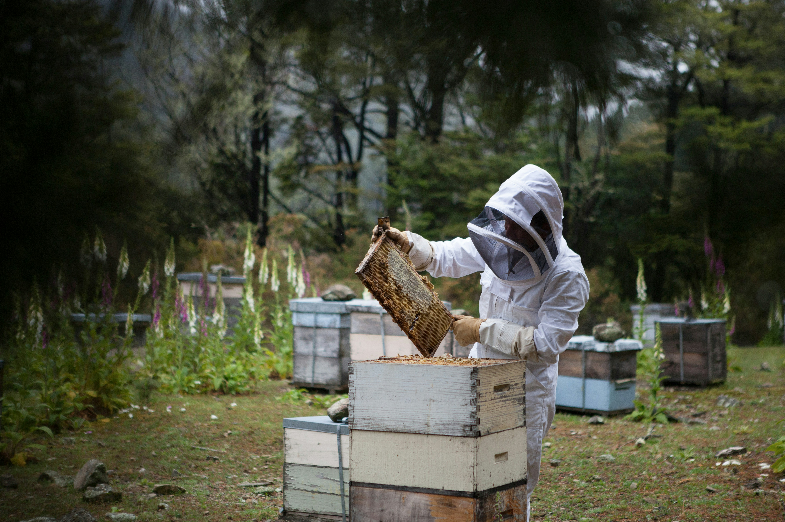

A YEAR IN THE APIARY - JANUARY
January is often a dormant period for bees, is a crucial time for beekeepers to focus on maintaining and preparing their hives for spring. During this month, several key tasks are essential for the health and well-being of the bees, as well as for the readiness of the apiary for the upcoming busy season. This includes assessing hive conditions, conducting repairs, and planning for spring activities.
Winter Feeding: Ensuring that bees have sufficient food reserves is vital. Bees rely on carbohydrates to sustain energy and body heat in winter. Regularly hefting the hive helps gauge if the bees have adequate food; a light hive indicates a need for supplemental feeding, typically with fondant. Continual monitoring throughout winter is crucial to keep the bees nourished and energetic until spring. Bees will typically consume approximately 24lb (11Kg) of stores in January. See our hive management guide for seasonal feeding advice.
Hive Inspection: Regular visits to the apiary for thorough hive inspections are necessary. This involves checking the hives for stability and protection against winter elements like wind and rain. It's also important to inspect for any damage from pests or intruders, as early detection can prevent further issues and safeguard the bees. Learn more about inspections and maintenance.
Hive Insulation: Proper insulation of hives is essential to prevent heat loss and drafts. Using materials like polystyrene or foam can help maintain a warm environment within the hive.
Varroa Mite Control: Treating bees with oxalic acid is effective for controlling varroa mite infestations, a common threat to bee colonies. January, often a broodless period, is ideal for this treatment. The treatment should be carried out on a warm sunny day when the cluster has broken to ensure that all bees are in contact with the vapor. Oxalic acid, applied as a vapor, effectively eliminates mites without harming the bees. However, it's important to avoid using this treatment on honey supers intended for human consumption due to potential harmful residues. See our full Varroa management guide for safe treatment options.
Planting for Bees: Honeybees can struggle to find food as there are very few flowering plants in the garden. However, there are a few hardy plants that can provide vital sustenance for bees during the colder months. One such plant is the winter-flowering heather which is an excellent source of nectar and pollen for bees. Other plants that can provide food for bees include crocus, hellebore, mahonia, and winter-flowering honeysuckle. It's important to ensure that there are enough flowering plants in the garden throughout the year to support honeybees and other pollinators. Planting a diverse range of flowering plants that bloom at different times of the year can help to ensure a consistent food source for bees and contribute to their survival. Visit our pollinator planting guide for suggestions.
Weather Awareness: Keeping an eye on weather conditions is important, as extreme cold and snow can affect hives. Regular checks for weather-related damage are essential.
DIY Projects: January is a good period to build hive parts and complete DIY projects in preparation for the active beekeeping season. Find suitable ideas in our equipment and tools section.
Maintain Records: Maintaining detailed records of hive health and activity during winter aids in making informed decisions about the colony's needs. Read how record keeping improves hive care.
Attend Educational Events: January is an opportune time for beekeepers to enhance their knowledge. Attending beekeeping seminars and conferences can provide valuable insights and techniques. Our beginner's guide offers great ways to expand your knowledge base.
In summary, January is a period of preparation and maintenance in beekeeping. By focusing on feeding, hive maintenance, mite control, planting for bees, weather awareness, record-keeping, and education, you can ensure your colonies are healthy, well-fed, and ready for the spring.